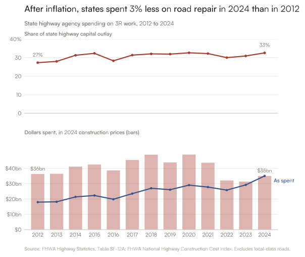
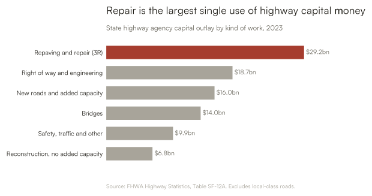
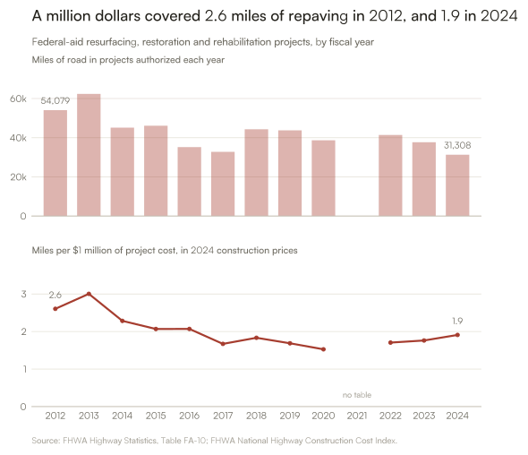

sf12a: 13 workbooks, 2012 to 2024
fa10: 12 workbooks, 2012 to 2024US Road Paving and Repair: Data Notebook
This notebook builds the data behind the road paving project from three FHWA sources.
| Source | What it gives | Used for |
|---|---|---|
| Highway Statistics, Table SF-12A | State highway agency capital outlay by kind of work | Dollars spent on repair |
| National Highway Construction Cost Index (NHCCI) | Price index for highway construction | Adjusting dollars for inflation |
| Highway Statistics, Table FA-10 | Miles and cost of federal-aid projects by kind of work | Miles repaved, and miles per dollar |
Two different measures of “repair”
- SF-12A does not report resurfacing on its own in most years, so spending uses FHWA’s whole 3R group: resurfacing, restoration, rehabilitation, and minor widening.
- FA-10 reports resurfacing and restoration and rehabilitation separately, with miles. Those two lines are added together.
Caveats
- SF-12A covers what state highway agencies spent. FA-10 covers only projects with federal-aid funds authorized that fiscal year. The two are not the same set of projects, so miles are only ever divided by FA-10’s own costs.
- Local-class roads only appear in SF-12A from 2015, so they are left out to keep the years comparable.
- When a state did not report, FHWA reuses its previous year’s figures.
- FHWA published no FA-10 table in its 2021 edition.
Download
Files are downloaded once into data/raw/ and reused after that. Set REFRESH = True above to pick up a newly published year.
Spending: read every sheet of SF-12A
Each sheet has the states down the side and the improvement types across the top, for one road class in rural or urban areas. Headings are matched by name, and an unrecognised heading stops the run, so a change in FHWA’s layout cannot slip through as a wrong number.
134,844 rows from 13 workbooks; every column total matches the published Total row.Inflation: the highway construction cost index
NHCCI is quarterly. Each year’s index is the average of its four quarters, and dollars are restated in the prices of the latest year of spending data.
Construction prices rose 102% from 2012 to 2024. Dollars below are in 2024 prices.National spending series
Local-class roads are dropped here so that every year covers the same road classes: Interstates, other arterials, and collectors.
| 3R outlay ($bn) | All capital outlay ($bn) | 3R share | NHCCI | 3R outlay (2024 $bn) | |
|---|---|---|---|---|---|
| year | |||||
| 2012 | 18.0 | 65.8 | 27% | 1.60 | 36.3 |
| 2013 | 18.2 | 65.0 | 28% | 1.61 | 36.5 |
| 2014 | 21.4 | 68.4 | 31% | 1.68 | 41.2 |
| 2015 | 22.3 | 69.0 | 32% | 1.70 | 42.5 |
| 2016 | 19.9 | 70.1 | 28% | 1.66 | 38.7 |
| 2017 | 23.5 | 75.0 | 31% | 1.67 | 45.5 |
| 2018 | 27.0 | 84.3 | 32% | 1.79 | 49.0 |
| 2019 | 26.1 | 81.7 | 32% | 1.92 | 43.9 |
| 2020 | 29.1 | 89.1 | 33% | 1.92 | 49.0 |
| 2021 | 27.8 | 86.4 | 32% | 2.06 | 43.7 |
| 2022 | 25.8 | 86.0 | 30% | 2.60 | 32.1 |
| 2023 | 29.2 | 94.5 | 31% | 3.01 | 31.4 |
| 2024 | 35.1 | 107.7 | 33% | 3.24 | 35.1 |


Miles: Table FA-10
FA-10 lists, for projects with federal-aid funds authorized in each fiscal year, the miles covered and the total project cost by kind of work. Miles here are divided only by FA-10’s own costs, restated in the base year’s prices.
The split between “resurfacing” and “restoration and rehabilitation” moves around a lot from year to year, which looks like reclassification, so the two are added together.
No FA-10 table for: [2021]| Miles | Total cost ($bn) | Total cost (2024 $bn) | Miles per $1m (2024 $) | |
|---|---|---|---|---|
| year | ||||
| 2012 | 54,079 | 10.3 | 20.8 | 2.61 |
| 2013 | 62,367 | 10.3 | 20.8 | 3.00 |
| 2014 | 45,138 | 10.3 | 19.8 | 2.28 |
| 2015 | 46,115 | 11.7 | 22.3 | 2.07 |
| 2016 | 35,198 | 8.7 | 17.0 | 2.07 |
| 2017 | 32,781 | 10.1 | 19.6 | 1.67 |
| 2018 | 44,312 | 13.3 | 24.2 | 1.83 |
| 2019 | 43,754 | 15.4 | 25.9 | 1.69 |
| 2020 | 38,676 | 15.0 | 25.3 | 1.53 |
| 2022 | 41,405 | 19.5 | 24.3 | 1.71 |
| 2023 | 37,681 | 19.9 | 21.4 | 1.76 |
| 2024 | 31,308 | 16.4 | 16.4 | 1.91 |

Reading miles per dollar with care
A fall in miles per dollar is not only a price effect, since prices are already taken out. It can also mean the work itself changed: more rehabilitation and less thin overlay, more urban and multi-lane roads, or more added work such as safety and drainage inside the same project. FA-10 counts centerline miles of projects, not lane-miles, and cannot separate these.